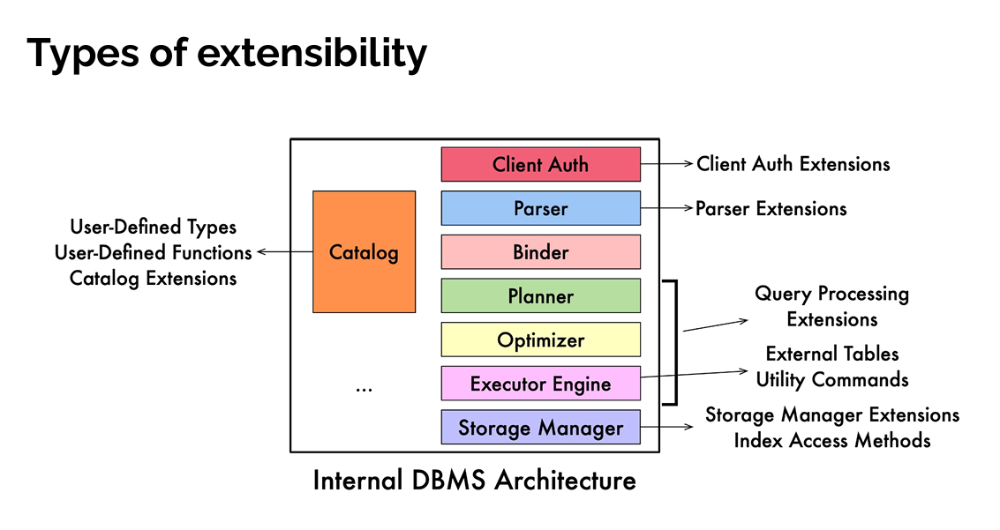
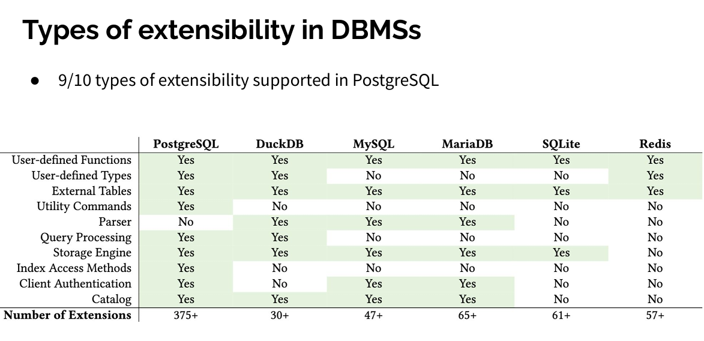

extension
ref
MySQL 插件详解 数据库插件概述 for postgres
ref
MySQL 插件详解 数据库插件概述 for postgres
MySQL 扩展
QS: * 就当前来说，添加新插件的时候需要使用 MYSQL_ADD_PLUGIN 来编写 cmake 文件，这个 func 简单看下来不能独立使用 * 其次是插件的回归是和 MySQL 的回归存放在一起的，不能独立存在 * 再之后是 api 问题，MySQL 的插件的符号直接就是 c++ 的符号，但是总所周知的问题，c++ 的 abi 存在严重的兼容性问题，所以几乎无法提供稳定的独立插件 * 上面两点几乎就限定 MySQL 的插件必须(有独立存在的MySQL插件吗)和源码一起发布 * 再然后是种类限制，当前支持种类有限，具体可以参考 pg 的调查文档


以前可扩展插件的核心操作就是 动态库的加载与卸载，再辅以一定的管理功能，实现功能的扩展
使用方法
- 具体可以参考回归中得某些插件的测试用例
- 手动加载
INSTALL PLUGIN xx SONAME 'xx';，需要确保 so 文件已经存放在 MySQL 的插件目录下 - 配置预加载 plugin_load="XXX"
MySQL插件定义
当前 MySQL 插件主要在 plugin 和 storage 目录下面
当前插件种类定义如下
#define MYSQL_UDF_PLUGIN 0 /* User-defined function */
#define MYSQL_STORAGE_ENGINE_PLUGIN 1 /* Storage Engine */
#define MYSQL_FTPARSER_PLUGIN 2 /* Full-text parser plugin */
#define MYSQL_DAEMON_PLUGIN 3 /* The daemon/raw plugin type */
#define MYSQL_INFORMATION_SCHEMA_PLUGIN 4 /* The I_S plugin type */
#define MYSQL_AUDIT_PLUGIN 5 /* The Audit plugin type */
#define MYSQL_REPLICATION_PLUGIN 6 /* The replication plugin type */
#define MYSQL_AUTHENTICATION_PLUGIN 7 /* The authentication plugin type */
#define MYSQL_VALIDATE_PASSWORD_PLUGIN 8 /* validate password plugin type */
#define MYSQL_GROUP_REPLICATION_PLUGIN 9 /* The Group Replication plugin */
#define MYSQL_KEYRING_PLUGIN 10 /* The Keyring plugin type */
#define MYSQL_CLONE_PLUGIN 11 /* The Clone plugin type */
#define MYSQL_QUERY_PLAN_PLUGIN 12 /* The Query Plan plugin type */
#define MYSQL_MAX_PLUGIN_TYPE_NUM 13 /* The number of plugin types */
此外还包含一些宏，用于简化插件的定义操作
mysql_declare_plugin // 定义 st_mysql_plugin 结构体
MySQL 的插件重点是 storage 插件，最先有 mysiam ，之后实现 innodb，期间不知道 storage 插件和 innodb 谁先谁后，谁为谁服务的，但是可以明确的是当前 MySQL 的插件中，storage 占据了很重的分量
这由于 innodb 才完整的支持事务，所以当前 MySQL 默认使用 innodb，但是又由于历史原因，无法直接摒弃 mysiam，所以现在 MySQL storage 和 上层比较割裂，事务操作都是在下层做的
插件的加载与卸载
mysqld_main()
|-init_server_components()
|-plugin_register_dynamic_and_init_all()
|-plugin_initialize()
-
插件在编译的时候，有的插件是必须使用的，所以是内置的插件，直接编译到 MySQL 的二进制文件中，有的的动态库，需要动态加载，但是无论是静态还是动态，都是从这里 init 的
-
详细的加载过程在 plugin_dl_add 总，使用 dlopen 打开 so 文件，之后检查版本，提取 st_mysql_plugin 的信息
-
之后存放在 plugin_dl_array 中
pfs
可以使用插件的方式实现 pfs，具体可以参考 innodb
- 应该可以使用函数的方式实现，但是 MySQL 不支持 func 作为表，func 无法返回表的结果